"설마 크겠지" 미루는 사이,
아이의 성장판과 전두엽 골든타임은 매년 닫혀가고 있습니다
유전 한계를 넘는 숨은 잠재키(+6.7cm)와 5각 두뇌 학습 병목, 성장판이 닫히기 전에 1분 설문 데이터로 즉시 진단하세요.
소아발달 전문 에디터가 엄선한 발달 단계별 필수 육아 큐레이션 스토어
아이의 발달 단계(신생아~학령기)와 핵심 케어 영역에 맞춘 검증된 필수 육아템입니다. 관심 육아템의 상세정보 및 공식 판매처 확인 시 신체성장·성조숙증·두뇌발달·기질학습 4대 정밀 진단이 즉시 무료 오픈(잠금해제)됩니다.
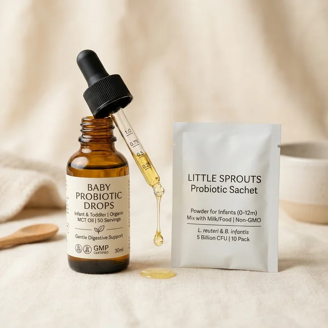
모유수유아 소아과 권장 필수 액상 비타민D 하루 1방울 및 신생아 배앓이 방지 프리미엄 유산균
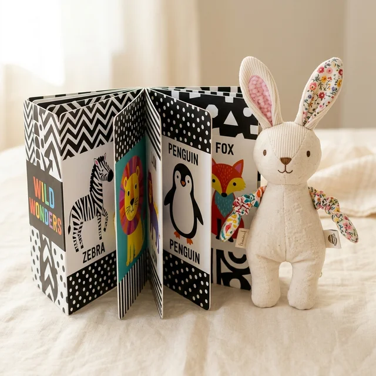
생후 0~3개월 시신경·두뇌 망막 자극 흑백 초점 병풍책과 무독성 구강기 안심 헝겊 인형
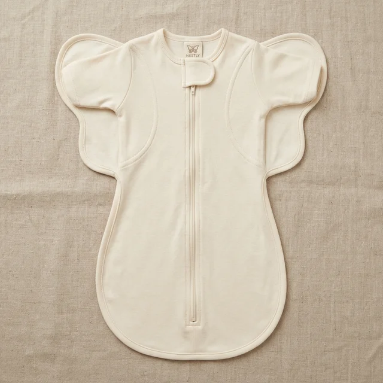
나비잠 자세를 유지시켜 신생아 모로반사 깜짝 놀람을 막아주고 깊은 수면(SWS) 호르몬 분비 유도
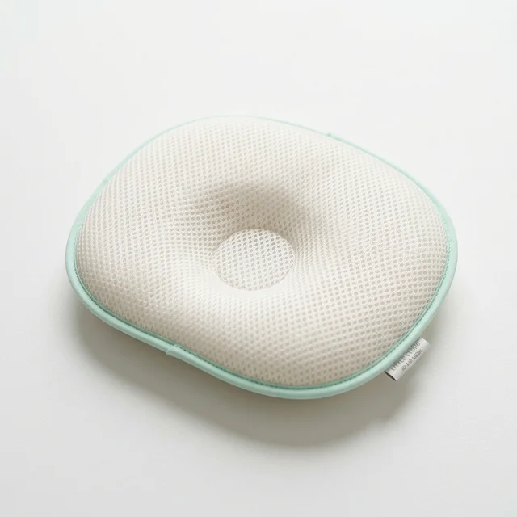
신생아 연약한 경추 C자 곡선 지지 및 열 많은 아기 태열·두상 변형 방지 에어쿨링 설계
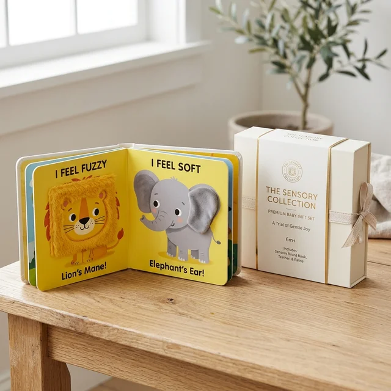
임신·출산 학부모 대상 영아 첫 뇌신경 언어 자극 그림책 및 프리미엄 오감발달 키트 무료 배송
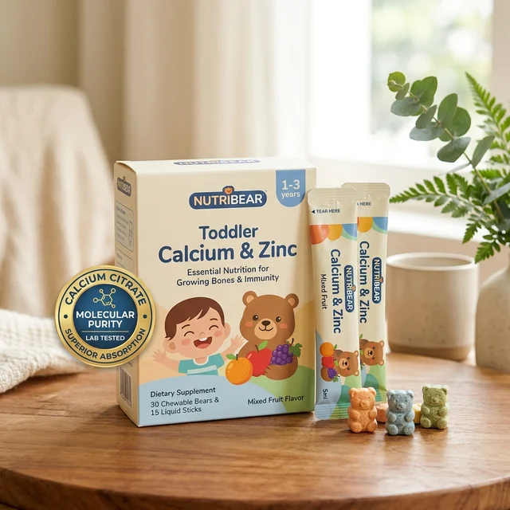
우유 안 먹는 아이도 저녁 식후 1포로 골격 형성 3대 핵심 미네랄 완벽 흡수
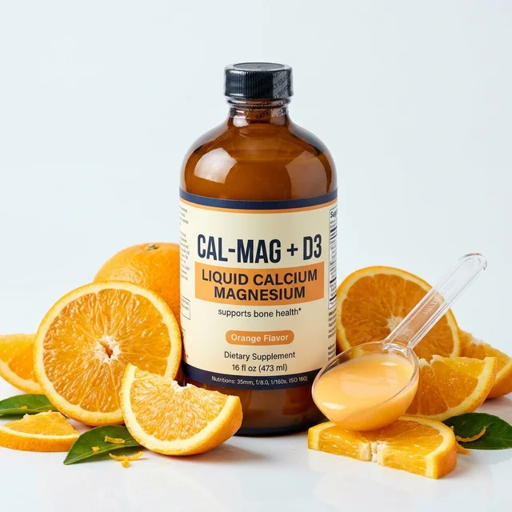
미국 소아과 전문의 추천 배합, 액상형으로 체내 흡수율 3배 높은 영유아 성장기 칼마디
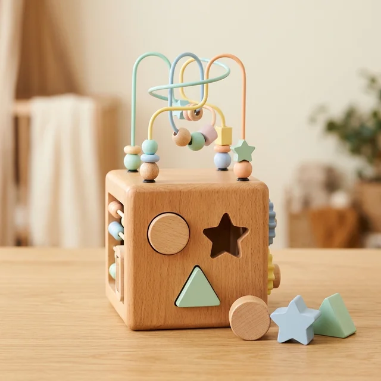
손가락 정밀 조작과 시지각 협응력을 키워 전두엽 뇌 시냅스를 연결하는 친환경 천연원목 교구
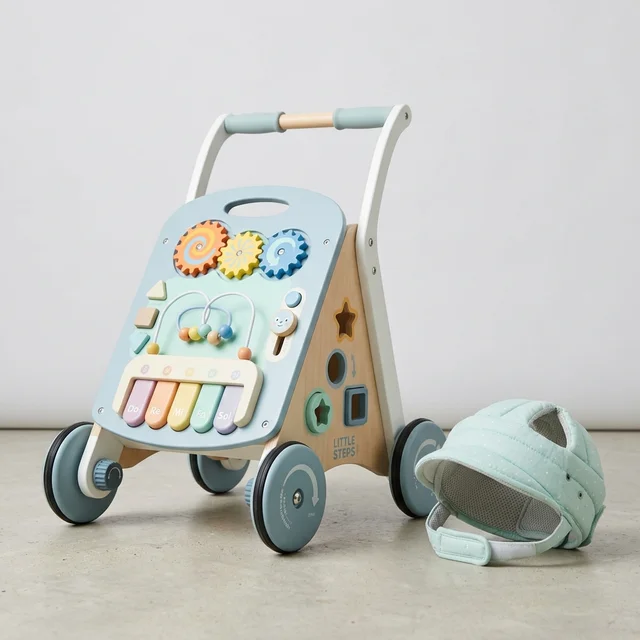
골반 수평과 대퇴골 각도를 지켜주는 속도조절 바퀴 설계로 O자 다리 예방 및 대근육 강화
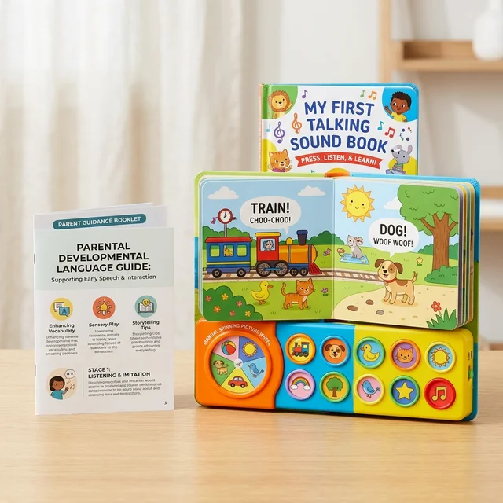
12~36개월 언어 폭발기 어휘력 300% 확장 K-DST 언어발달 정밀 검사 연계 0원 상담 키트
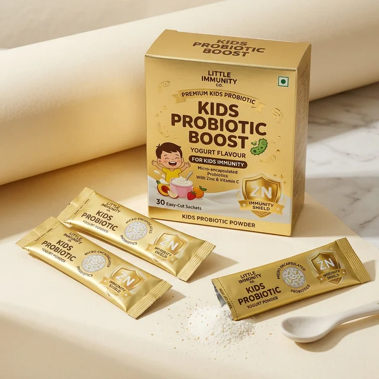
어린이집·유치원 단체생활 감기·장염 방어 면역력 아연과 장내 마이크로바이옴 정상화 생유산균
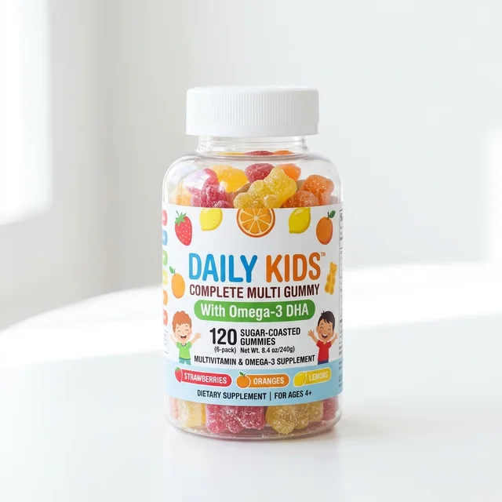
인공 색소·합성 감미료 0%, 두뇌 발달 필수 DHA와 뼈 형성 비타민D3가 함유된 맛있는 젤리
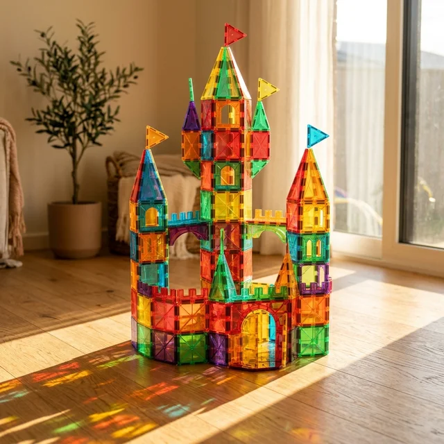
평면 도형에서 입체 건축물로 변환하며 두뇌 두정엽 3차원 공간지각과 수학적 직관력 자극
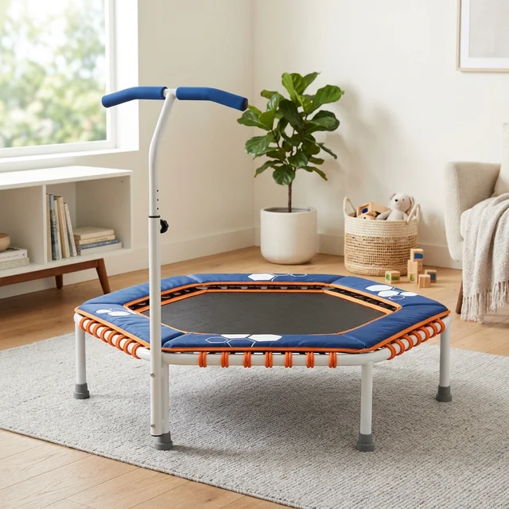
층간소음 차단 탄성 번지로 관절 무리 없이 무릎 연골 성장판을 자극하고 성장호르몬 분비 촉진
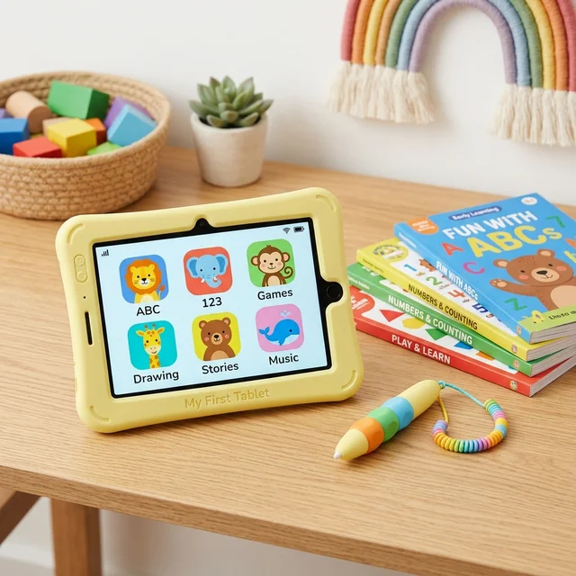
한글·수학·동화·영어까지 전용 태블릿과 체험 교재 집앞 무료배송 및 1:1 맞춤 학습케어
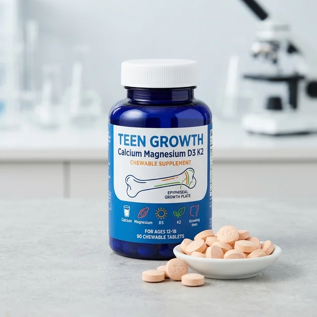
2차 성징 사춘기 전후 급성장기(PHV) 골밀도 강화 및 성장판 닫힘 지연 somatostatin 억제 영양
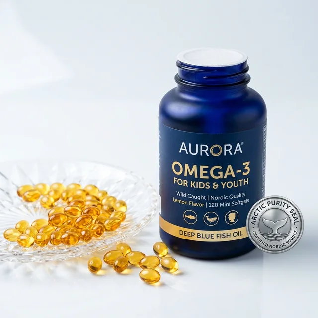
초등학생 전두엽 실행 집중력, 작업기억 용량 및 시각 피로 완화를 위한 노르웨이산 rTG 오메가3
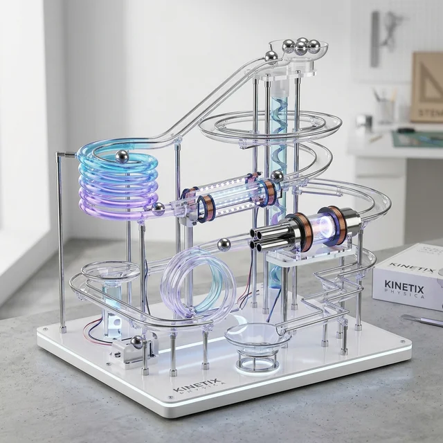
위치·운동에너지 역학 법칙을 온몸으로 체험하며 스마트폰 중독 도파민을 이겨내는 과학 마블런
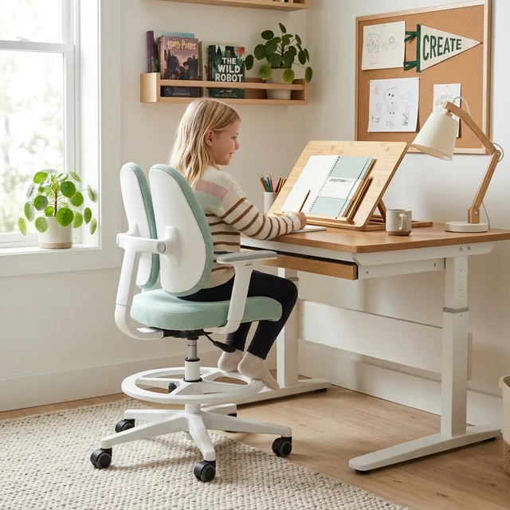
구부정한 척추 디스크 압박을 해소하여 숨은 키 1.8~2.2cm를 찾아주는 듀얼 요추 서포트 의자
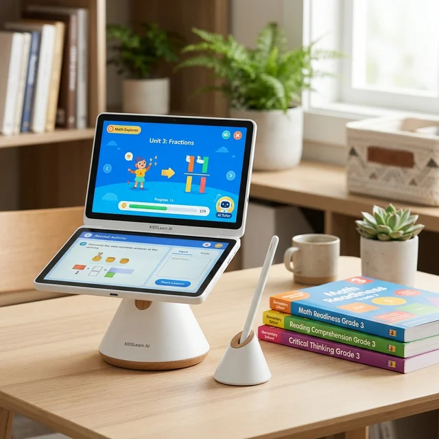
초등 전과목 AI 학습기 + 학습 진단 검사 + 전과목 교재 100% 무료 증정 이벤트
우리 아이 1:1 발달·성장 정밀 진단 라운지 (신체성장 · 성조숙증 · 두뇌 5대 역량 · 학습기질)
큐레이션 스토어에서 관심 있는 육아 필수템을 클릭하여 상세 스펙과 공식 판매처 확인을 1회 진행하시면, 별도 페이지에 마련된 4대 정밀 진단 라운지가 즉시 무료로 오픈됩니다.
우리 아이 4대 발달·성장 1:1 정밀 진단 센터
원하시는 진단 영역을 선택하시면 1분 객관식 설문을 통해 질병관리청(KDCA) 성장도표 및 보건복지부 K-DST 기준 맞춤 리포트가 즉시 발행됩니다.
생년월일 일수 보정 백분위 및 유전키 대비 숨은 잠재키 정밀 시뮬레이션
2차 성징 징후 및 성장판 조기 폐쇄 위험도 체크 & 골든타임 방어 솔루션
전두엽 실행기능·작업기억·문해력·수리력·정서조절 5각 밸런스 정밀 분석
아이의 타고난 기질과 집중 지속시간에 맞춘 가정 내 맞춤 코칭 가이드
1분 설문 진단으로 부모님이 즉시 확인하게 되는 핵심 결과와 해답
막연한 불안감 대신, 의학·학술 데이터로 검증된 시각적 지표와 가정 내 실천 솔루션을 바로 확보하실 수 있습니다.
우리아이 최종 성인 예상키 및 성장판 골든타임 진단
생년월일 일수 보정 백분위와 부모 유전키(MPH) 및 생활 습관을 교차 분석합니다.
- ① 성인 최종 예상키 3단 비교 (유전키 vs 방치키 vs 잠재키) 현재 또래 백분위와 후천 관리 시 추가 확보 가능한 숨은 키(+6.7cm) 산출
- ② 성장판 잔여 골든타임 & 수면·영양 정밀 기준 성장판 폐쇄 전 남은 개월 수 및 체중 비례 칼슘·D3·단백질 일일 권장량 제시
- ③ 숨은 키 +1.8cm 척추 감압 & 하루 실천 루틴 거북목·디스크 압박을 펴는 10분 실내 운동과 아침·저녁 밀착 스케줄 제공
5각 두뇌 밸런스 차트 및 전두엽 학습 병목 진단
설문조사로 간단히 진단 가능하며, 보건복지부 K-DST 및 뇌인지 논문 3,894편에 기반한 고신뢰도 판독입니다.
- ① 5각 두뇌 밸런스 & 성적 정체 병목 정밀 탐지 문해력·수리공간·작업기억·메타인지·탐구력 5대 지표 중 핵심 병목 원인 규명
- ② 사교육 중복 지출 차단 & 1:1 맞춤 공부법 처방 두뇌 흡수 성향(문답·조작·시각·목표형)에 맞는 자기주도 루틴과 필수 교구 선별
- ③ 6개월 학습지수(LQ) 상승 곡선 & 유망 진로 로드맵 병목 교정 시 변화할 집중 시간·기억 보존율과 강점 기반 미래 진로 제시
기본 인적 사항 및 생년월일 정밀 산출
생년월일 일수까지 정밀 보정하여 질병관리청(KDCA) 월령별 표준 백분위와 대조합니다.